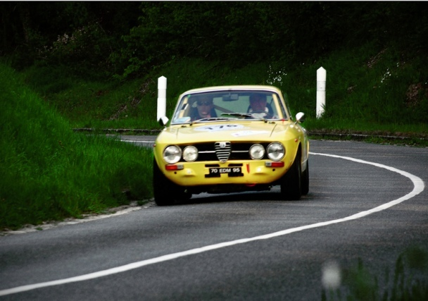

| Try again,Even harder: Alfa Romeo 1750Gtv アルファロメオが登場する小説 | |
| 森田 徹 | |
| (2018) | |
題
：
Try again, Even harder
その１．突然の出会い
「さて明日はいよいよプレゼンだ。今夜は晩飯食ったらもう一度資料に目を通しておかなきゃな」
孝弘は混雑するJRの帰宅ラッシュに揉まれながら窓の外の景色を見るとも無く見ていた。
いつもは車での移動が主だったが、今日はクライアントとの打ち合わせで駅前のパーキングに車をプールして電車で向かった帰りだった。
春先の涼しい夕暮れだったが今はひどく蒸し暑い。列車内に次の駅への到着が迫るアナウンスが響いた。
「お、もう阿佐ヶ谷か。」孝弘は先ほどようやく仕上げた資料が入ったバッグを網棚から引き寄せドアの方へと体を捻った。
と、何の前触れもなく電車は急激に減速し、動輪が線路を引っ掻いているのではないかと思うような激しい金属音がした。
あまりに咄嗟の出来事だったが右手はどうにか吊り革を握っていた。しかし左手はバッグを持っていたため次に襲ってくる衝撃に十分に対処できる状態ではなかった。
彼の体は後ろから何十人もがもたれかかって来たであろう強烈な衝撃を受け、思わず体が左回りに反転した。
その頃にはブレーキ音も消え車両は停止していたが、あまりの衝撃で床へ倒れこむ乗客も数多く居た。
緊急停止のために急ブレーキを掛けたのは理解できたが車両の中はまさに阿鼻叫喚の様を呈し、大声で痛みを訴える若者、狂ったように泣き叫ぶ小学生らしい女の子、倒れこんだままぐったりと声も出さずに横たわる初老の男性など、あまりにも非日常的な光景を孝弘は何故か現実味を感ぜずに居た。
「す、すみません。手を貸してもらえますか・・・」彼の背後から声がした。
見ると床に座り込んだ女性の姿が目に入った。
「大丈夫ですか？はい、手を出して」
「ありがとうございます。座席に座っていた方の足にぶつかってバランスが・・・」
「そんなことはどうでもいい。怪我はありませんか？」
どうやら彼女は足を捻ったらしく自力では立っていられない様子だった。
と、車内にアナウンスが入り、このアクシデントは人身事故であることが告げられた。
そして車両はこのまま阿佐ヶ谷駅には動かせないので、ここで降りて線路上を歩いてもらうことなどの説明とお願いの内容が繰り返し放送され、ドアが空いたら救急隊の指示に従って行動するようにとも付け加えられた。
「大丈夫ですか？ここで降りろって言ってますが歩けますか？」
孝弘は痛みに顔を歪めた彼女に向かって訊ねた。
「救急隊に処置してもらいましょう。骨折だったらひどいことになる」孝弘はそう言うと彼女をシートの隙間に座らせた。
「ありがとうございます。大丈夫です。ちょっとヒールが高かったもので、倒れるときに足首がねじれただけです」彼女はそう言うと頭を下げた。
結局しばらくして二人は敷き詰められた敷石に足を取られながら、JR職員に誘導され線路内を歩いていた。
孝弘は痛む足のせいで足元が覚束ない彼女にことわりを入れて、肩を抱きながら歩いていた。
「ごめんなさい。お世話を掛けてしまって」
「いいや、こういう時はお互い様だ。私も後ろから押されて体が捻れて、窓ガラスにいやというほど額をぶつけたみたいだ。今頃になっておでこが痛いことに気がついた」
そういうと孝弘は拳を作り自分の額を軽く叩いた。
「え！大丈夫ですか。頭を強く打ったなんて心配です」
「大丈夫でしょう。これ以上此の頭は悪くならないからね」冗談めかしてそう言うと、彼女は初めて笑顔を見せた。
「父に迎えに来てもらいます。お礼もしなくてはいけないですし」
ようやく駅前まで出た時、彼女はそう言うと携帯を耳に当てた。
『父？そうか実家から通っているのか。父親といっても俺と大して違いなさそうだけどな』
孝弘はそう思い、暫く彼女の次の言葉を待っていた。
「ごめんなさい。母は家にいたんですが、父は今夜は出かけていて遅くなるそうです。母は運転できないものですから私はタクシーで帰ります。今日は本当にありがとうございました」
そういうと彼女はバッグを開け名刺入れを取り出し、孝弘に一枚差し出した。
「協栄物産株式会社・・・へぇ随分大手の会社にお勤めですね」
協栄物産といえば孝弘の会社とも付き合いがある。新規事業の開発責任者でもあり、今の会社を立ち上げた5人のうちの一人でもある彼は、近年経済成長の目覚ましい東南アジアからの物産を使った飲食店をチェーン展開する企画を通したばかりだった。
「父がここの役員ですから、私の実力と言うより縁故採用でしょうけどもね」
彼女、いや名刺を見て彼女の名前が"円成寺"であることを知って孝弘は驚いていた。
「協栄物産の円成寺常務の娘さんですか？これはまた・・・」
そう言うと孝弘は今度は自分の名刺を目の前にいる「円成寺翔子」へと手渡した。
「・・・サンライズコーポレーションの中西孝弘さん、ですか？」
「円城寺さん、タクシーで帰るくらいなら私が送って行きましょう。そのビルの地下に私の車が停めてある。円城寺常務の娘さんと分かった以上、放っておいては帰れないですから」
そういうと孝弘は彼女の返事を待たずに手を引いて、横断歩道へと向かって歩き始めた。
翔子はまだ少し捻った足首に違和感を感じていたので、孝弘は不躾ながら翔子の肩を抱いて歩いていた。
『娘、というにはちょっと年が近すぎるし彼女と言うには年が離れすぎてる。こうやって宵の口に駅前を歩いているのは、傍から見たら変な目で見られるかもしれない』
孝弘は苦笑いをし、エスカレーターで地下に降り駐車場に入った。
彼女の目の前にあったのは中西の風貌からは創造できない、芥子色の背の低いクーペだった。
「これ後の座席は荷物置き場だから、助手席にどうぞ」
そういうとドアを開けて翔子の乗り込むのを手伝った。
「足首が痛いんじゃ此の車は乗り降りしにくいね。すまん」そういうとバッグを後席に放り込み、運転席に座った。
「さて、ナビゲーションをお願いできますか」野太い排気音をアバルトのマフラーから吐き出し、ゆっくりと地上へのスロープを上りながら孝弘は美しい横顔に問いかけた。
その２．不思議な関係
電車のアクシデントで偶然出会った取引先役員のお嬢さん、円成寺翔子。
こんなことっていったい他の人にも起きるのかと、孝弘はあの晩はプレゼンの準備どころではなかった。
1750GTVの助手席に翔子を乗せて自宅を訊くと、どうやら都道427号線を北上して下井草方面に向かえばいいことがわかった。
「早稲田通りにまで出ていいのかな」孝弘が聞く
「いいえ、早稲田通り手前を左折して日大通りから少し南に入ったところです。門の前に付けてくだされば母が迎えに出てくれるはずです」翔子はまだ少しくるぶしが痛むのか、両足をきちんと揃えられずに座っていた。
「すまんな。これならタクシーの方が座りやすかったかも知れない。この車じゃ足を投げ出さないと座りにくいだろう」
孝弘は視線を前に据えたままそう告げた。
『円成寺常務の奥様にもご挨拶しなきゃいけない。先日動き始めた新事業では常務の賛同を取り付けられたからこそ、あれだけ渋っていた銀行も聞く耳を持ってくれたわけだから』
孝弘の立ち上げたアジアンレストランはすでにとっくに陳腐化した業態であると、頭を下げに言った先の金融機関はにべもなく孝弘の懇願をあしらった。
あれはまだ8ヶ月ほど前のことだったよな、と記憶を巡らしていると、「そう、次の交差点を左です。お願いします」と翔子の声が聞こえてきた。
「この車ってなんていう車ですか。私、車の運転が好きでそろそろ自分の車を買おうかなと考えていたところなんです。これ右ハンドルですけど、多分日本の車ではありませんよね？大変失礼かと思いますが、もしよろしかったら車の相談に乗ってもらえませんか」
突然の提案を受け、孝弘は驚いた。
「へぇ、円城寺さん車の運転がお好きなんですか。でも会社には車好きの若い男性社員も多いんじゃありませんか？私などは世代が違うから今の若い方への助言など出来る自信はあまり持ち合わせていないですよ」
いや、彼にとっては満更でもない提案だった。計算高く考えたわけではないが、円城寺常務の娘さんと話せる機会が持てれば今後の社の動きにも良い影響がありそうだった。
辛子色のGTVは日大通りに入り西南に進み、やがて「円成寺」と彫られた立派な表札のある門の前に辿り着いた。
翔子は母親に車の中からもうじき到着することを電話で連絡してあったので、孝弘が門の前に着くと同時に小柄な女性が現れた。
「中西様と仰るのですね。どうもご迷惑をお掛けしてしかもわざわざ娘を送り届けてくださいましてなんともお礼の述べようがございません。どうぞ、車はそのまま中に入れますのでお上がりくださいませ」
翔子の母親は自分より年上であろうと思えたが、きりっとした立ち姿と取ってつけたように見えないお辞儀の姿は見ていて気持ちのよい仕草だった。
お邪魔したいことは確かだったが、孝弘には明日のプレゼンの下準備が気がかりで丁寧に遠慮の意を述べ円成寺家を後にした。
明けて翌日。気がかりだったプレゼンも無事終わり、孝弘は社長へ（とはいえこの会社を一緒に立ち上げた大学時代からの友人だったが）報告を入れた。
その後会社に戻り、自分のデスクに着くとパソコンに付箋でメモが貼り付けてあることに気がついた。
『協栄物産の円成寺様からお電話がありました。すぐにこちらから折り返しご連絡を入れると伝えたところ、会社に戻ってからの連絡で構わないとのことです。よろしくお願いします。13時15分受け 三田』
部下の三田からの伝言だった。三田はメールでも連絡をくれていたが、ちょうど電車で移動中だったため気が付かなかった。直ぐに電話を掛け挨拶をすると、円成寺氏はいつものあの豪放磊落な語り口調で孝弘を食事に招いた。
やはり昨夜の一件でお礼がしたいということなのだろう。孝弘は何故かくすぐったいような気がして、自分自身が何故こんな感情になったのか自分でも理解できない不思議な気持ちだった。
車は円成寺の自宅へ置かさせてもらい、そこからは円成寺の運転するドイツ製の大型セダンで移動した。
4人を乗せた車は繁華街から少し外れた地中海料理の店へと向かっていた。
『なんだか変な感じだ。俺には家族ってものがない。でもこうやってよその家族と一緒に飯を食いにレストランへタクシーで向かうなんて、本当に久しぶりのことだ。今更この年で家庭を持とうなどというだいそれた気持ちは起きやしないが、それでもやっぱりこういう関係はいいものだ』
味わわなければ知らなければ別に気にもならないが、いざこうやって幸せそうな家族というものを見てしまうと、孝弘には仕事以外に自分を奮い立たせる物が欠落しているのではないかという不安な気持ちを覚えずには居られなかった。
その３．アルファロメオという車
ひょんなことから取引先の娘さんに知り合ってから初めての週末。孝弘は翔子から車の相談を再び持ちかけられ、再び円成寺宅に昼ごはんを呼ばれながらの相談に出向いた。
「中西君、うちの翔子が車を欲しがっていることを聞いていると思うが、この前中西君のアルファロメオに乗せてもらってからというもの、どうやらその欲求が加速してしまったらしい。忙しいところを重々承知の上で君にその役をやって欲しいんだが」円成寺氏の趣味でもある手打ちそばをいただきながら、孝弘は思いを巡らしていた。
「常務、常務のお考えになっていた車種はどのようなものでしょう。お父様の意向も踏まえた上で車種の・・・」孝弘がしゃべりだすとそれを遮るように円成寺はこう告げた。
「いやいや、常務というのはやめましょうよ。今は取引先でも何でもない。事故の恐怖と痛みに苛まれていた娘を助けてくれたヒーローとその娘の父親だ。なぁそうだろう母さん」
「そうですわ。あの時中西さんが居てくださらなかったら翔子はどれほど心細かったことでしょう。それにお父さんの知り合いの方だったなんて、本当に奇遇のこと。感謝しております」
「それに私の考えは参考にはならないだろう。事あるごとに日本の車を色々勧めてはみたが、こいつはどれを見てもなにを聞いても国産車には興味を示してはくれん。きっと中川くんのアルファロメオがそれに拍車を掛けたんだろうな」
それを聞いた孝弘は少しだけ座りの悪さを感じたが、今回の出来事は自分の新規事業に大いに力添えを貰えた常務に対して、そのお礼ができたのではないかと思うことで自分を納得させていた。
そして孝弘は円成寺の奥方の揚げた春野菜の天ぷらと蕎麦を啜り込みながら翔子に似合う車のことを考えていた。
「翔子さん、もし良かったら明日時間を貰えますか。私がいつも世話になっている自動車修理工場があるんだけど、明日はその社長のところでタイヤの交換を頼みに行く用事がある。もしラテンの車に興味をお持ちなら参考にあるかもしれない。私はアルファロメオしか知らないが、社長はフランスの車にも明るい。女性が運転するのに相応しい車の助言ももらえることだろう」
「はい！ありがとうございます。是非お願いします。父は車好きなんですがどうも国産車こそ最高だと言って聞かないんです」
戦後の復興期をがむしゃらに働いてきた円成寺はイギリスやアメリカ、ドイツの工業製品などに追いつけ追い越せと働いてきた世代だった。
そして今、メイドイン・ジャパンが世界中で高い評価を得ていることを自分のことのように誇らしく、そして最大の喜びに感じる人間だった。
・・・・・・・・・・・・・・・・・・・・そして翌日・・・・・・・・・・・・・・・・・・・・・
「先日お乗せいただいた時は足が痛くてそれどころじゃなかったけれど、こうやって改めてこの車、アルファロメオでしたね、に乗ってみてやっぱり凄く素敵な気持ちがします。どこが、と聞かれてもよくわからないんですが・・・」
「それは良かった。私はこの車にちょっと思い入れがあってね。いや、この車そのものじゃないけれど、若いころどうしてもこれと同じ車が欲しかったんだが叶わなかった。50歳を前にどうにか程度の良いこれを見つけて、これから行く社長の世話で手に入れることができたのさ」
世話になっている自動車屋は翔子の家からは少々遠かった。孝弘は1750GTVのノーズを関越道の練馬インターチェンジへと向けた。
程なく二人を乗せた辛子色のジュリアクーペは、日曜だというのに思いがけず空いていた関越道を快調に飛ばしていた。
大事なお嬢さんを乗せているわけだから急激なレーンチェンジも車間距離を積めたりもせずに、無論彼は元来乱暴な運転をするわけではないが、ツインチョーク・ウエーバーの吸気音とマルミッタ・アバルトの奏でる排気音を狭いキャビンに響かせながら西へ突き進んでいた。
『なんだろうこの感じ。たしかに私はイタリアのクーペということに惹かれていたことは確かだったわ。でもそれだけじゃない、ううん、そんなことどうでも良くてこのアルファロメオという車はそれ以外の車とは全く違う感じがする。それほどたくさんの車に乗ったことがあるわけではないけれど、父のアウディの大きなセダンや従兄弟のBMWのクーペなどとは全く違うわ。もしかしたら古い車だということがその理由なのかしら』
翔子は両足を投げ出すような低い着座位置から見える外の景色が新鮮で、そして柔らかいのにしっかりと体を包み込んで支えてくれているこの見た目は無愛想な合成皮のシートのすわり心地の良さを楽しんでいた。
そんな翔子の思いに気がついたかのように孝弘は口を開いた。
「アルファロメオという車はね、意思をもった車のようにさえ思う事がある。単に古い車だということではなくて、常に車と自分が対話をしながら運転しないと上手いこと操れないってことさ。だから自分のコンディションが悪い時は無理をしないし、冴えている時にはこいつも冴えまくっている。霧吹きで吹いたガソリンをピストンの下がる負圧で吸い込ませ、バッテリーの電気をコイルで増圧して起こした花火で着火させる。古典的な機構だけれどもそれは足回りも同じだ。でも熟成された機構は完成度が高いことでもある。その熟成された足回りは今の車から比べれば遥かに軽いこの車体を自由自在に、あたかも自分の手と足のように動かしてくれる」
正直、翔子には難しすぎて理解できない内容ではあった。しかし自分が今感じているこの感覚の全てが孝弘の説明してくれたことなんだろうということは理解できていた。
やがて二人が乗ったクーペは所沢インターチェンジで本線から分かれ、一般道へと降りる。
分流し、やや急な曲率のカーブへと入って行く時に翔子は孝弘の言ったことを感じることが出来た。
5速から4速へ落として分流したのだが、その瞬間エンジンの回転数はひときわ高くなったことが分かった。エンジンブレーキなのかフットブレーキなのかそれともその両方なのか分からないが、兎も角全く恐怖を感じること無くしっかりと小さなクーペは路面を掴み、減速していることが分かった。
すぐに3速。そして今度は軽くアクセルを開けながらETC表示のあるトールゲートヘ向かってややノーズを上げ向かっていく。
車体の向きがゲートとオン・コースになった時、再びアクセルは戻されて今度は逆に軽くブレーキングされながらギヤは2速へと落とされていた。
『凄い！なんてことなの！こんなことどうやったらこの短い距離の中で流れるように出来るのかしら。孝弘さんの言っていた操るってことはこういうことだったのね』
彼は助手席の翔子に恐怖を感じさせないよう、いつにも増して穏やかに丁寧に操作をしていた。
それは急速に親しくなってきた翔子に対する自分の態度と似ているな、と孝弘は思った。

その４．相棒と伴侶
関越道所沢インターを降りて、孝弘と翔子を乗せた辛子色のクーペは国道254号線沿いのこじんまりとした中古車屋に滑り込んだ。
孝弘から聞いていた通り、ストックヤードには色とりどりの翔子には見たこともない車が何台も停められていた。
「お邪魔します」孝弘が声をかけた。
「おいでなすったな不良中年。調子はどうだ？いやタカさんの体はどうだっていいが、イチナナゴーは年寄りだからな」店主の加藤は破顔しながら無遠慮にそう声を掛けた。
「相変わらずひでぇな。俺は客だぜ？それに今日は世話になった取引先のお嬢さんが一緒に居るんだからチョットは加減してくれよ」孝弘も微笑みながらそう返した。
「あぁ、いけねぇ。ごめんなさいねお嬢さん。ガラが悪いのは生まれつきだから勘弁してくれ、いや勘弁して下さい。俺は加藤っていいます。タカさん、いや孝弘さんとは若い頃からの付き合いなんだ。お聞きになってるとは思うがこの黄色いアルファもおれが世話した別嬪さんだ。どうです？いい車でしょう」加藤はそう自己紹介して帽子を取り軽くお辞儀までした。
「いえ、あ、初めまして。円成寺翔子と申します。中西さんは父とお仕事のお付き合いがあって、こうやってワタシの車の相談に乗って貰うことになりました。無理を申していることは良く分かっているんですが」翔子は深々とお辞儀をする。
「あぁ、なんだか俺達とは別の世界にお住まいの方のようだ。こんなに丁寧で上品な日本語をしゃべる女性に会うのは久しぶりだ。なぁ、タカさん」
「俺はそうでもないぜ」と孝弘はニヤリと笑う。
「まぁいいや。俺はタイヤ交換してるから、好きに車を見ていてくれ。気になったのがあったら試乗も構わないぜ」加藤は再びキャップを被り、作業に戻りそして孝弘に声を掛けた。
「そうだ！イチナナゴーをこっちへ廻してくれ。リフト空けておいたから」
「あいよ。あぁそうだ。良かったら翔子さんこれ動かしてみます？MT免許でしょ。どノーマルだから気難しくはないから」
まさか翔子はそんなことになるとは考えていなかったので暫し絶句した。
もちろん丁重に断ろうと思った矢先、孝弘はキーを手に乗せて有無を言わせない状況で彼女を運転席へと誘導していた。
「シート位置を合わせて、そうだねバックレストも少し起こそうか。俺と違って足が長いから天井までのクリアランスは十分だろう。こいつはシフトレバーが水平に突き出ているから、クラッチを切って左上がローって感じだ。クラッチは重くはないよ。アクセルに軽くつま先を乗せる感じで十分トルクは出てる。ゆっくりとクラッチを繋げば呆気無くクラッチミートは完了さ。じゃぁ俺は助手席に」
『そんな...無茶な。確かにMT免許だけど、免許取ってからずっとATしか運転していないのに』翔子は急展開過ぎる事の成り行きに面食らっていた。
「そうだそれじゃぁ先ずエンジンを掛けて。もう十分温まっているから単純にキーをひねればすぐ回り始めるよ」助手席から孝弘が声を掛ける。
「はい。やってみます」なんだか不安だらけだったが何故か翔子はすっかりその気になっていた。
『えっと・・・ニュートラルを確認して、と。クラッチを踏んで、え！クラッチ重くないって言ってたのにこれ、ふくらはぎが攣りそうになるくらい重いじゃない！』
今の時代、初めてのMT車がジュリアクーペという若い女性はそれほど多くないだろう。
幸いにも孝弘の車は十分にメンテナンスができていたのでローもセカンドもギヤを鳴らすこと無くシフトできたのが幸いだった。
『さて少しだけアクセルを開けて・・わっ！アクセルも重いんだわ。言われたようにつま先を少し乗せる感じで・・・』
感の良い翔子はギクシャクしながらもエンストせずジュリアクーペをそろそろと動かし始めた。
「上手いじゃないか！その調子。まっすぐ行けばいいだけだから、肩に力を入れずステアリングに手を添えているだけでいい。セカンドに繋がなくても良いよ」
なんとか無事にドック入りさせた翔子は運転席から降りた。
手に汗握る、とはまさにこういうことか。大役を果たしたかのような緊張と、そこから開放された安堵のため息をつき、改めてジュリアクーペをリヤから眺めていた。
「綺麗な車ですね。線がとても女性的。ルーフラインもフェンダーラインもそしてリヤガラスからトランクへと流れるふくよかな曲面も。でもその反面、先ほど操作したクラッチやアクセル、そしてエンジンの振動を正直に伝えるシフトレバーもとっても男性的。それにここまで来る間ずっと室内に響いていたエンジン音と排気音。それと加速するときに聞こえていたのは吸気音だとおっしゃっていましたよね。車が走るというよりもエンジンが引っ張っていくっていう感じがしました」
翔子は初めての経験に少し興奮していたのかもしれない。
『アルファロメオって面白い。たったこれだけ動かしただけなのに』
その後二人は展示してある車を見て廻った。もちろん孝弘は90年代以降、できれば2000年代以降の車を中心に考えていた。いつもいつも孝弘が翔子の車の世話を焼くわけにも行かないし、なにか不具合があった時に一人でここまで運転して来させるのも気が引けた。
「こういうのお似合いだよ。神経質でもないし」孝弘が指し示したのはルノー メガーヌ・スポールだった。
「MTが良いというならこれかな。右ハンドルだし2014年モデルだし。何とかパッケージっていう新車保証も残ってるから何か不具合があっても安心だしね」
確かに良い選択だった。2ドアクーペで信頼性が高く走行性能も高い。それに女性が乗っていても嫌味にならずいわゆるオシャレ感も十分にあった。
「う～ん。確かにきれいな車ですし仲間と出掛けたり母と二人で買い物に行ったりするのにもちょうどいいサイズですね。でも何か違うんです」そしてとある車に翔子の目がとまった。
「これ。この車なんて言うんですか。この車では私には無理でしょうか」
翔子が指し示したのは2ドアのクーペ、アルファロメオ916GTVだった。
「え！これかい？う～ん。どうかなぁこれ。ちょっと古い部類になるから安心して乗れるようにするのにはちょっと手を入れる必要があるかもしれないな」
そこに加藤がやってくる。
「タカさん、タイヤ交換済んだぜ。試運転してくるか？」と加藤
「あぁそれよりこの車、これって試乗できるかい？」と紺色の916を指さして孝弘は訊ねた。
「ん？これかい。あぁ大丈夫だ。ただちょっとアイドリングが不安定気味だから気を付けてな」
加藤から鍵を受け取りまずは敷地内で孝弘がエンジンを掛けてみる。自分のジュリアとは同じメーカーとは思えないほど綺麗な作りの室内と平和なキャビンだった。軽くアクセルを開けてみると2Lのツインプラグユニットはやはりその血筋を伺わせる豪快な回り方を見せた。
「さあ、いいよ。乗ってごらん。取り敢えずこの辺りを一周りしてみよう」孝弘は翔子を助手席に招き、ドライビングポジションを丁寧に合わせた。
916GTVは呆気無く大通りへ出たかと思うと、孝弘は遠慮無くアクセルを開けた。
しっかりとしたシフトレバーをセカンドへとシフト。再びアクセルを開けると本来ツインのプラグは燃焼効率を高めるための筈だったが、ツインプラグはGTAユニットの事だと言わんばかりに天井知らずの回り方をした。
「ほぅ。面白いねこりゃ」思わず孝弘は声に出し、頬を緩めた。すると翔子は孝弘の方を見てこう言った。
「これ、これがいいです。私にもこういう運転が出来るように教えて下さい」そして続けて「孝弘さんの車とは違うけど、この車もエンジンが引っ張って走る感じが凄くします。そして何よりもこの室内の風景です。日本の車が嫌いっていうわけではないんですが、日本の車にはこういう室内デザインはありません。気取ってる訳ではありませんが、運転する自分にとって室内はとても大事な風景です。緊張感があるのに調和の取れたこのデザインは何か大切な物を思い起こさせる気さえします」
翔子は相変わらず興奮していた。そして結論めいた言葉を孝弘に投げかけた。
「私は孝弘さんの車が男性的であるのに、デザインは優雅な女性的デザインを感じると申し上げました。でもこの車はどうやらそれが進化しているようです。男性的な走り方の中に女性の面影を感じ、女性の如き振る舞いの中に男性的な荒々しさを感じるんです」
「孝弘さんはアンドロギュノスってご存じですか。ギリシャ神話によれば、古代の最初の人間は頭が二つに手足が四本づつあって、円筒状の横腹をそなえていて、現在の人間二人が背中合わせにくっついたような丸い体をしていました。それには男と男がくっついたもの、女と女、そして男と女の組み合わせの、三種類の人間がありました。この中で、男と女が一体となっていた人間は『アンドロギュノス』といわれていて、自惚れが強く、神々に戦いを挑もうとした人間たちだったんだそうです」
「ゼウスは怒りそれぞれの組み合わせのものを2つに切り離すように決断し、『アンドロギュノス』をまず二つに分けました。またアポロンは胸を作り、四方八方から皮を腹の真ん中へ引き寄せそこで締めくくったので臍と呼ばれているものができました。その後男と女を分ける作業をしました。もともと人間は一つのものだったのですが、二つに別れ、各々は半身に過ぎず、常に自分の半身を求める事になったのです。このようにして男達は皆女好きであり、女達も同様に男好きになり子孫を残すようになりました」
「日本には伴侶と言う表現もありますが、英語ではベターハーフという表現もあります。このハーフという表現こそ、原形を切断された人間が失った自分の片割れに憧れて自分の、より良い半身である相手をベターハーフと呼ぶというわけです。私にとって男性的な力強い魅力と女性らしい妖艶な魅力の両方を持つこの車はまさにアンドロギュノスの魅力を感じさせるんだと思います」
『そうか。おれがあのジュリアが好きなのはあの車がおれの伴侶、相棒だからだと思っていた。でもそれは彼女の言葉を借りれば、あのイチナナゴーはゼウスに依って引き裂かれた俺の分身だというわけだ』
孝弘は前輪駆動のアルファロメオを運転するのは初めてだったが、もしかしたらこの車は翔子さんにお似合いかもしれないと思えてきた。
漸くGTVの癖を飲み込み、もう一度セカンドとサードでツインプラグユニットを震わせながら、孝弘はゼウスの怒りに触れたアルファロメオに雄叫びを上げさせた。
その５．交錯する思い
「久しぶりにあの店に飯でも食いに行ってみるか」
孝弘は円成寺氏と出会うきっかけになったあのアジアンレストランへ行きたくなった。
会社の立体駐車場からマスタード・イエローの1750GTVを降ろし乗り込んだ。
あれから8ヶ月と少し。孝弘のグループ会社が経営するそのレストランは予想以上に活況を呈していた。
「こんばんは。ご無沙汰しています」孝弘が店に入ると、彼を見かけた従業員が大股で近づき、お辞儀をした。
「やぁ久しぶり。凄いなぁ、随分繁盛してるじゃないか。俺がどんなに頼んでも、どれだけ現実的な事業計画を持って行っても融資を渋り続けたあの阿呆な銀行マンに見せてやりたいもんだ」
それは彼の本音だった。人を通じて円成寺氏を紹介してもらえたから良かったものの、あのままではこの店は開店までまだ時間がかかっていたに違いない。
「そういえば中川さん。一昨日、円成寺氏がお見えになりましたよ。お仕事関係と思われる大勢の方々とランチタイムに」
「そうか。有り難いものだ。気に掛けてくださっているんだろうな」
孝弘は円成寺の会社からは決して近くないこの店にわざわざ来てくれたことに感謝した。
「さて、俺も昼飯だ。いつものやつを頼もうか」孝弘はそう言いテラスへと出た。
彼が椅子に座るやいなや胸ポケットの携帯が鳴った。
『ん？おや翔子さんからだ。なんだろう」孝弘は戸惑ってはいたが、ためらわずに電話に出た。
「翔子さんか？どうしたんだ。」
「申し訳ありません。会社に電話したらお昼ごはんに出られたと言われたもので。今お電話大丈夫ですか」
「あぁ。これから昼飯にするところだから大丈夫だよ。どうした？」
「あ、ますます申し訳ありません。実は今夜ご都合はいかがでしょうか。父が中西さんのご都合を確かめておくようにと言うものですから」
孝弘は孝弘はもちろん時間に合わせて伺うと答え、そして今、円成寺氏の力添えで開店できた店にいること。そして氏がこの店を気にかけてくれて時々お見えになってくれていることなどを伝えた。
「中西くん。ここは私の気に入っている店だ。どうだ君の会社もこんな店を出店しないかね」
確かに魅力的な店だった。ライブ感があり従業員の動きも軽快で気持ちがいい。もちろん料理は立派なもので十分満足の出来るものだった。調度品はきっと円成寺氏が決めたのであろう。華美に過ぎず質素でも無く、大切な仲間や家族と楽しい時間を過ごすには気持ちよく食事が進められるに違いない。
「で、わざわざ今夜お時間を割いてもらったのは、ほらこいつの車のことなんだ」
「お嬢さんの車ですか。先日ご一緒した中古車店ではアルファロメオのクーペのことが随分お気に入りでしたが、如何なりましたか」
「うん。やはりこいつは中西くんに感化されているようだ。あれからというもの近くのイタリア車のディーラーへ認定中古車が無いかどうかなど尋ね回っているほどだ」
いや、それは無理だろう。さすがに916クーペの認定中古車は無いはずだ。それよりも愛情溢れたオーナーの手によってきちんとメンテナンスされた個体を選ぶほうがいい。加藤にも確認したが、916は不具合が出る場所であれば、もうひと通り出ているはずだと。
だから今の時点で残っているのは乗りつぶすつもりで手放したものか、手を入れ尽くしてもさすがに次の車に買い換えようと、後ろ髪を引かれて手放された車かどちらかだと思っていい。
俺のイチナナゴーもそうだった。加藤に頼んでもなかなかいい個体に巡りあうことはできなかった。依頼してからおよそ三年後、ようやく加藤の眼鏡に適ったイチナナゴーが出てきた。登録した時から三人のオーナーを経てきた車だったが、無改造のオリジナリティの高い個体だった。
「円成寺さん。もし良かったらこの前の車屋、加藤って言いますが、彼に任せてもらえませんか。彼に訊いたのですが、あのモデルは割合に球数が多くて丁寧に探せば良い車が見つけられるだろうということです。時間は少し掛かりますが、恐らく数ヶ月あればきっと良い状態の車が手に入ることでしょう」
彼はそう言うと柄にもなく、斜向かいに座っていた翔子に向けてウインクをした。
「中西さん有難う。是非あのGTVっていう車が欲しいんです。中古車だと色は望めないかもしれませんが、この前の紺色とか黄色などもいいですね。赤ならプロテオレッドという深い色の赤があるようですから、それならばいいかなぁなんて勝手に思ってます」
翔子は微笑みながら、とっくに自分がGTVを買うことを決意していることを告げた。
「そういうわけだ中西くん。電車の中でひょんな事で出会ったことが運の尽きだと諦めてくれ。こいつは子供の頃から決めたらてこでも動かないやつだった。きっと今回の件ももうこいつの中では動かせないものになっているんだろう」
運の尽きなどとはとんでもない。次々に運ばれてくる料理を楽しみながら孝弘はこの状況を楽しんでいた。
『どうやら俺にも仕事と車以外に気持ちを注げることが始まったということか。翔子さんは魅力的だけど俺には娘と呼んでも良い女の子だ。今更どうのこうのも起きはしない。それもまた個人的な感情に左右されなくて面白い。第一もし彼女に手などを出したら円成寺氏が許してはくれないだろう』
彼は子羊のトマト煮込みを口にし、フルボディの重めのボルドーで流しこむように飲み込んだ。
『こんなやさぐれた俺ならきっと安全牌か？ ハハ、そんなのも一興だ』
窓の外に吹き渡る夜半の風は生暖かく、そろそろ近くの公園のソメイヨシノも見頃になるんじゃないかと孝弘は思い描いた。
が、彼はすぐその情景を頭から振り払い、目の前に座る円成寺にグラスを掲げ、大袈裟に乾杯の素振りをした。
その６．捲土重来
「翔子さん。その後、調子はどうだい？不具合無く乗れてるかい？」
日曜の朝、孝弘はキッチンでコーヒーを落としながら、電話でそう訊ねた。
「ハイ。やっぱり少し時間を掛けて整備してもらったからかしら。言われていたような不具合は全く感じられません。ヘッドライトが少し暗くて、雨の日の夜の運転は少し気を遣いますが」
翔子は部屋着のまま母親と一緒に朝食の準備をしているところだった。
「今日は桜も見頃だな。どうですGTVでツーリングでもしませんか」
若いころとは違い、女性を外出に誘うくらいは変な緊張はせずに済んだが、それでもこの提案は駄目で元々だとわかっていた。
「え！はい。今日は特に出掛ける予定でもなかったんですが、もしかしたら母が用事があるかもしれません」
しかし翔子の方は動揺していた。厳しい父親の下で育てられた翔子は男性とのお付き合いは奥手だった。
孝弘は自分自身が何を始めようかとしていることがわからなくなっていた。
仕事は充実していたし本当に腹を割って話が出来る仲間も少なくない。自分が家庭を持つなどというのはあるときから諦めていた。それはもう20年ほど前の春の雨の夜のことだった。
・・・・・・・・・・・・・・・・・・・・・・・・・・・・・・・・・・・・・・・・・・
その夜は花冷えのする肌寒い夜で、今の会社を立ち上げたばかりの孝弘は、現在の社長である大学同期の大森とともにこれからの夢について飲み、歌い、そして肩を組んで盛り場の通りを歩いていた。
「孝弘さん？」
ふと聞き覚えのある声が後から聞こえ、孝弘は反射的に振り返った。
そこには2つ下の後輩、酒田理恵が立っていた。
理恵と孝弘の二人は暫く前までごく親しい間柄で、もし彼が普通に就職しそのまま数年お付き合いが続けば彼らはごく自然に結婚しても不思議ではないような関係だった。
「よう！久しぶり。こいつは大森、ウチの会社の社長だぜ。ほら学科は別だったけれど俺と同期の大森だよ。ついこの前ようやく会社が立ち上がって、代表取締役はコイツ、俺は常務取締役だ。って言っても全部で5人のちっぽけな会社だけどな」
彼らは起業を在学中から準備し、卒業した翌年の3月になりようやく登記が終了出来た。
先行きに不安がないわけではなかったが「若さ」というベールは彼らの不安を覆い隠し、前途洋々たる想いを胸に大海原に出航した若き船乗りの五人衆だという気概にあふれていた。
理恵を加えた三人は近くの居酒屋へと滑り込み、再度祝杯を挙げた。
「俺はね、たくさん儲けたいわけじゃ無いんだよ、ただね、ずっと組織のしたで働いてようやく部下をまとめる頃になったら残りの人生の心配をする、なんて言うのが嫌なだけだ。まぁこの会社がうまくいくかなんて保証はどこにもない。ただ、ダメならダメで俺は、大森もそうだが、ただそれだけの男だったということがはっきりするだけのこと。見る前に翔べだ。なぁ大森！」
酔いの回った孝弘は大声でしゃべり貪り食い、理恵の肩を叩いた。
「孝弘さん。私卒業したら海外に行くの。本当は何も告げずに行くはずだったけれど、二人で良く歩いたこの街もしばらく来れなくなるって思ったらなんか悲しくなっちゃってもう一度この街をぶらぶらと歩きたくなったの。でもまさか孝弘さんがいるなんて・・・」
大言壮語を吐いていた孝弘だったがその言葉を聞くと急に静かになった。そして彼はこう切り出した。
「いつ帰ってくるんだい？留学か？就職か？」
「分からないの。実は1年前、父がサンフランシスコ支社の支社長に配属になったの。父の会社は今後アメリカで事業を拡大する計画だから、その支社長ってことはもしかしたら定年まで日本に戻れないかも知れないって言っていた。私は日本で就職するつもりだったけど、父は父の近くで私に仕事について欲しいと言って聞かないの。私が卒業すると同時に母も父のところへ行くの。それはそうよ、ずっと単身赴任っていうのも無理があるわよね。お父さんが可哀想」
大森は空気を察し、その場を離れて帰ることにした。
二人はそのまま馴染みの店で少し飲むペースを落としながらお互いの心を探り合った。
孝弘は決心した。会社を大きくして自分に決心が着くだけの男になった時、理恵を迎えに行こうと。
でもそれはこの日に決めたわけではなく、自然消滅的に解消した理恵との関係を修復するためにも、この会社を成功させたかったのではないかと思う時が今までにも度々あった。
だがついぞ彼はそのことを理恵には伝えられなかった。
向こう見ずな所が彼の美点だとはいえ、海の物とも山の物ともつかぬちっぽけな会社が始まったばかりなのに、今の理恵にそんな無責任なことを言うわけには行かなかった。
・・・・・・・・・・・・・・・・・・・・・・・・・・・・・・・・・・・・・・・・・・・・・・・・
「孝弘さん。あの黄色い車は思い入れがある車だったっておっしゃっていましたよね。もしよろしかったら私にそのことをお話してくださいませんか」
高速道路は孝弘に運転をお願いしたい、と翔子からの進言で紺色のGTVのステアリングは孝弘に手にあった。
加藤により十分にメンテナンスされたツインスパークのGTVは、中央道の藤野パーキングエリアを過ぎようとしていた。
「ん？どうしてだい？俺の過去なんぞ面白いことなどひとつもないよ。いや俺自身は波瀾万丈な時の流れを楽しんできたけども、他人が聞いて面白いわけじゃぁない」
彼はふと思い直し、言葉を続けた。
「そうだね。翔子さんと俺とはアルファロメオが取り持つ縁だからね。話したくないって言うことでも無いから、もし興味があるなら喋ろうか」
あの後理恵と別れた孝弘は一応の成功を得た。代表者の大森は優れた若き経営者のひとりとして、経済誌のインタビューなども受けるほど注目された人物にまでなった。
子供の頃から車が好きだった孝弘は、自分の車にアルファロメオのクーペを選んだ。
しかしその頃のアルファロメオは日本の正規代理店もなくなり、アメリカではレモン法のワースト1にその名を連ねるほど、アルファロメオの生産管理と品質管理には問題を抱えていた時代だった。
理恵からの連絡もいつの間にか途絶え、それに加え事業を拡大することだけが彼の存在理由になっている自分をわかっていた時期でもあった。
ジュリアクーペは何人ものオーナーの手を経たものばかりになり、価格も値崩れし始めていた。値段が下がり始めると今まで手の届かなかった「俄オーナー」が途端に増え、そしてそれらの半可通たちは不具合が出たジュリアを不適切なやり方で延命し、そして最後は破棄するかのように手放していった。
そんな時、突然理恵が帰国した。どうやって調べたのか、理恵は新しく移転した本社社屋へ突然顔を出し受付の女性に孝弘への面会を申し出た。
問題は彼女が二人でやって来たことだった。理恵は新しい出発の報告をするためにわざわざ孝弘の下を訊ねたのだった。
「まいったね。あの時は。いやもう半分諦めていたし気持ちも冷めていたのが本当のところだろう。でもね、ああやってにこやかに挨拶なんぞされるとね、今までの俺は俺の半分しか完成していないんじゃないかっていう気がしたよ。この前翔子さんはギリシャ神話のアンドロギュノスの話を例に挙げたよね。実は俺、あの時ぎくっとしたんだよな。俺の片方半分はあの理恵との再会の時からずっと失われたままなんじゃないかってね」
なおも孝弘は続けた。
「そうだイチナナゴーのことだよね。その時二人は何とダークグリーンの2000GTVに乗ってきていたんだよ。会社の近くの喫茶店で儀礼的な挨拶をして彼女は俺に別れを告げた。どうやらその彼は親父さんの会社の人間で、しばらく研修で日本にやってきていたらしい。帰国を前に彼女は日本に出向き、俺のところに挨拶をしたってわけだ。二人は結婚してあっちに永住するってことだった。別れ際に近くのコインパークまで見送った時にそのジュリアクーペが停まっていて、二人してその車に乗り込んだのを見て俺は何故か涙を抑えられなかった。あぁ、あそこに本当は俺の半分があるんじゃないかってね」
「ごめんなさい。興味本位で訊いたわけではなかったんですが、もっと違うことじゃないかって思っていました」
翔子は返答に困りお詫びをするしか無かったが続けて、
「孝弘さん、Try again, Even harderってご存じですか。学生の時に知った言葉なんですが、この言葉が私、大好きなんです」
「あぁ、捲土重来とでも訳せばいいのかな。確かに気持ちを奮い立たせる言葉だな」
柄にもなく感傷的になっていた孝弘は、そう答えた。
「そうです、捲土重来とご理解くだされば幸いです。もし良かったら、もし私にそんな価値を感じてくださるなら、Try again, Even harderでお付き合い下さいませんか」
『なんということだ。厳しい父親に育てられ、箱入り娘だとばかり思っていた翔子さんからこんな言葉を聞こうとは』
孝弘は返答に困り、車の列が空いた前方に向かってシフトダウンしアクセルを開けた。
『孝弘さんのクーペと私のGTVで砂塵を巻き上げてもう一度反撃に移りましょう。孝弘さんは魅力的なビジネスマンであるけれど、それは孝弘さんの魅力の半分だけ。きっともう一度反撃して行けばきっとその失われた半分を手に入れるに違いありません。その半分はわたしであって欲しいんです』
翔子は目の前の景色がコマ落としのフィルムのように見えるほど加速していく916GTVの加速度を感じ、きっと二人の後ろにはもうもうたる砂塵が巻き起こっているに違いないと思った。
それはあの時、電車から降りるのを手伝ってくれた時に自分の体を力強く支えてくれた孝弘を感じた気持と重なっていた。
＊＊＊＊＊＊＊＊＊了＊＊＊＊＊＊＊＊＊＊
{kind=link}
{kind=link}
{kind=link}
{kind=link}
{kind=link}
{kind=link}
{kind=link}
{kind=link}
{kind=link}
{kind=link}
{kind=link}
{kind=link}
{kind=link}
{kind=link}
{kind=link}
{kind=link}
{kind=link}
{kind=link}
{kind=link}
{kind=link}
{kind=link}
{kind=link}
{kind=link}
{kind=link}
{kind=link}
{kind=link}